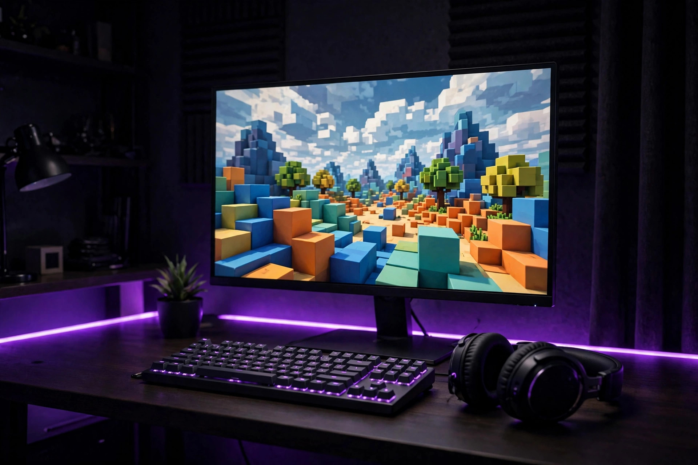

Guia rápido — o essencial em 30 segundos
- Não existe versão nativa para Mac: o uso no macOS é com emulador Android.
- Mesma lógica do PC: emulador instalado → aplicativo instalado → script executado.
- Desempenho: reserve memória suficiente para o emulador e feche outros programas.
O que você precisa
Antes de começar, confira os requisitos do seu Mac. Você precisa de um Mac com macOS, um emulador Android instalado e espaço livre suficiente no disco. Reserve memória suficiente para o emulador, porque ele divide os recursos com o macOS e com o jogo — quanto mais folga, mais estável fica a execução. Mantenha o macOS atualizado e feche programas pesados antes de começar. Confira também a sua conexão com a internet, porque o download do emulador e do aplicativo precisa de uma rede estável. Se o Mac já fica lento com tarefas simples, a experiência no emulador também será limitada.
Como instalar com emulador

A instalação no Mac segue a mesma lógica do PC, com emulador Android, do download até a primeira execução. Primeiro, instale um emulador Android no macOS e conclua a configuração inicial dele. Depois, instale o aplicativo do Delta Executor dentro do emulador, seguindo o mesmo processo de instalação do Android. Abra o aplicativo dentro do emulador e confira se ele abre normalmente antes de tentar qualquer script. Só depois dessa verificação, abra o jogo dentro do emulador e execute o seu primeiro script. Siga as etapas na ordem e não pule passos: pular a configuração do emulador é a causa mais comum de erros na primeira instalação no Mac.
Como executar scripts no Mac
Executar um script no Mac funciona como no PC e no Android. Copie o código do script que você quer usar, abra o executor dentro do emulador, cole o código na área indicada e toque em executar. O script passa a rodar dentro do jogo. Se nada acontecer, confira se o código está completo e se a versão do aplicativo está atualizada, porque scripts desatualizados são uma das causas mais comuns de falha. Prefira scripts de fontes conhecidas e comece pelos mais simples. Guarde os seus scripts favoritos para executar novamente sem precisar copiar tudo outra vez.
Dicas de desempenho
Pequenos ajustes deixam o Delta Executor mais rápido e estável no Mac. Feche aplicativos que você não está usando, libere espaço no disco e mantenha o aplicativo e o emulador atualizados. No emulador, reserve memória suficiente e ajuste as configurações de desempenho conforme o seu Mac. Esses cuidados simples evitam travamentos e deixam a execução de scripts mais suave, principalmente em jogos mais pesados. Se o jogo fechar sozinho, feche outros aplicativos em segundo plano e tente novamente com menos coisas abertas.
Perguntas frequentes
Preciso de emulador no Mac?
Sim. Não existe uma versão nativa para macOS, então o uso no Mac é com emulador Android.
O guia do Mac é igual ao do PC?
Segue a mesma lógica: emulador Android, do download até a primeira execução.
Posso usar o mesmo script do celular?
Sim. Os scripts são os mesmos: copie o código, cole no executor e execute dentro do jogo.
E se o aplicativo não abrir?
Verifique se a instalação dentro do emulador foi concluída corretamente e se o aparelho virtual atende aos requisitos.